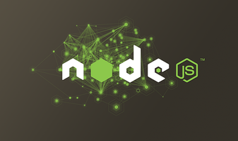
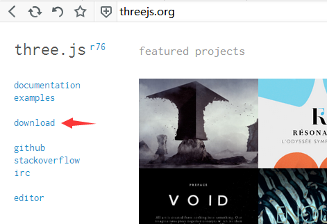
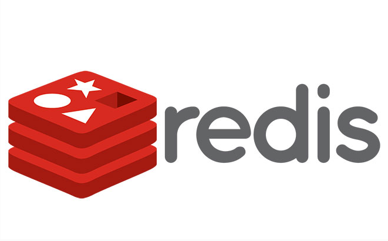
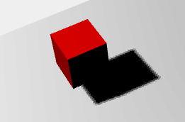
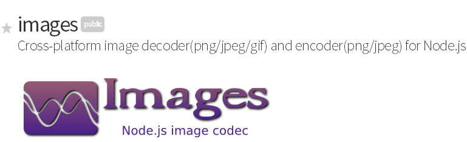
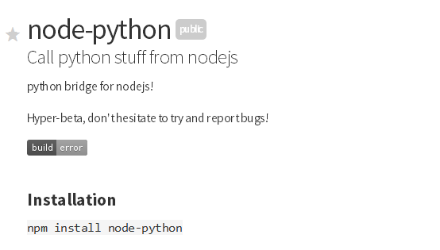
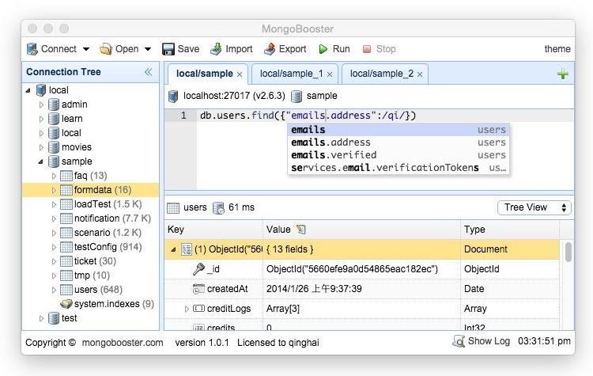

清逸的博客
首页
在线钢琴
在线乐器
调音器
节拍器
文章
关于我
登录
用Prismjs给自己的博客文章增加代码高亮功能
#编程
2017-11-17 12:42:00
UI的同事向我们开发推荐了PxCook
#其它
2017-11-16 12:50:00
angular nicescroll的使用方式及详细配置参数
#H5开发
2016-11-2 06:01:00
jquery滚动条插件 nicescroll 的 详细 配置参数
#H5开发
2016-11-2 03:40:00
网上流传的js对象克隆实现函数的坑
#编程
2016-9-20 02:55:00
nodejs使用socket.io-client，nodejs做socket.io的客户端
#nodejs
2016-7-8 07:47:00
在Express.js中使用Swig模板框架
#nodejs
2016-7-1 04:02:32
nodejs模板引擎的效率对比
#nodejs
2016-6-29 05:55:28
NodeJs实现音频录制 - Node Core Audio
#编程
2016-6-15 07:28:00

nodejs清除require缓存 delete require.cache
#编程
2016-6-15 06:47:00

three.js下载与开发指南
#three.js
2016-5-18 09:31:00

redis的命令集合 & nodejs,php,python,java连接redis
#编程
2016-5-5 14:38:33

three.js spotLight阴影低像素模糊的解决办法
#编程
2016-4-20 03:00:48
centos搭建python服务器
#编程
2016-4-9 05:27:38

node-images库介绍
#编程
2016-3-28 09:12:00

node-python:在nodejs中调用python代码
#编程
2016-3-26 08:28:00
three.js中让模型居中的示例代码
#编程
2016-3-26 07:35:00
网页访问电脑上的midi乐器-Web MIDI requestMIDIAccess的介绍
#编程
2016-3-7 09:16:00
手机移动端H5开发中常用的WEB资源整合
#H5开发
2016-3-7 02:11:23
WebGL框架比较之Three.js和Babylon.js的比较
#编程
2016-3-3 03:28:00
three.js obj转js的详细步骤 convert_obj_three.py的用法
#编程
2016-3-2 02:18:00
mongodb的主要命令集合 - 参考教程
#编程
2016-2-18 03:18:42

好用的mongodb可视化工具
#编程
2016-2-17 09:47:00
一个使用HTML5 WebDatabases的简单例子
#编程
2016-2-16 08:06:00
Bootstrap网格系统快速入门
#编程
2016-3-18 14:29:37
网页中的字符编码(HTML Special Characters)
#编程
2016-1-3 13:54:00
1
2